Clorb
We were tasked with “Making the Mundane Playful...” and we thought, what could be more mundane than doing your chores? We designed Clorb, a digital chore buddy who does the chore alongside you. You pick a task, set a timer, and Clorb drops you into a live room with everyone else currently doing that chore. You can leave a short message to cheer everyone else on. It's a productivity tool that's actually fun!

// understand
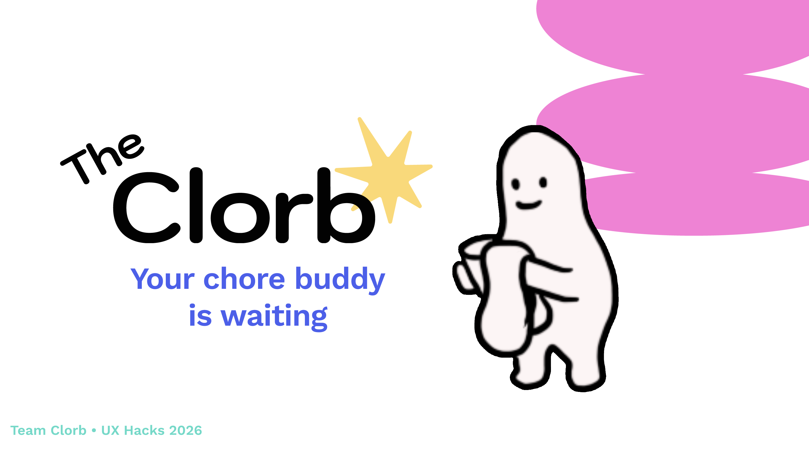
The Prompt
All around the world, people are doing chores right now. What if you could join a room of strangers doing the same one?!
The mundane becomes bearable — even fun — when it's shared.
That was the idea we brought to my first ever hackathon, UX Hacks, Carnegie Mellon's largest design hackathon, under the theme of “making the mundane playful.” And, our design won the competition!
Bringing this idea to life from a messy whiteboard concept to a live prototype in one weekend was an incredible experience. We mapped the user flows in Figma, drew every animation by hand in Procreate, and used a combination of Gemini, Claude, v0, and Unity to rapidly vibecode the final product. It was a fantastic opportunity to take the research, design principles, and heuristics I've been studying at Carnegie Mellon University and translate them into a tangible, playful solution.
// define
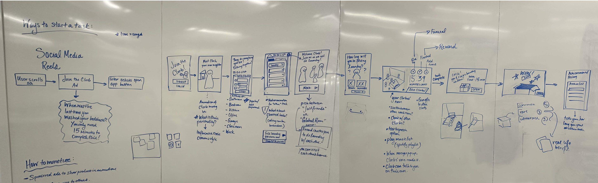
The Whiteboard Phase
Our team began by dismantling the transactional structure of productivity applications. Most task managers function like corporate project boards, which tell you what to do but fail to help you actually initiate the task.
We spent the first hours of the hackathon mapping out why people avoid chores. Our research validated that most adults report feeling overwhelmed by household tasks, losing an average of two hours every day to procrastination.
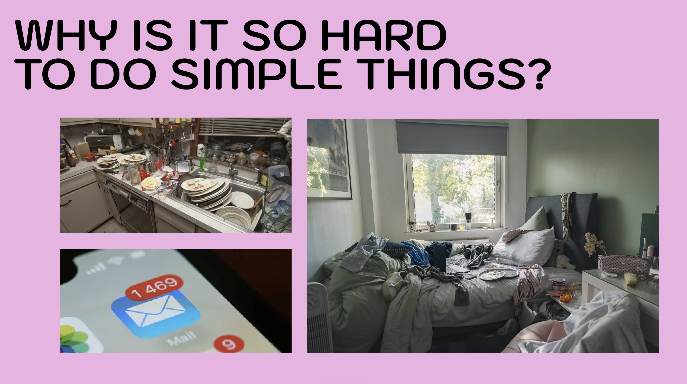
We knew from personal experience that people are more likely to complete a task if they feel someone else is actively working alongside them. This guided our primary design question: How can we turn social accountability into a playful framework instead of a punitive system?
Behavioral Framework
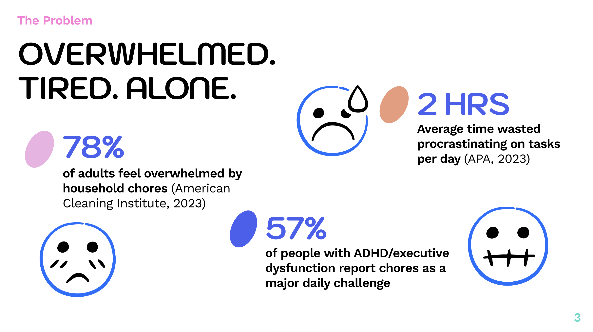
We decided to ground the application in the psychological concept of body-doubling. This is a behavioral strategy frequently used to manage ADHD symptoms, showing that individuals can become up to four times more productive simply by working in the passive presence of another person.
We set out to scale this intimate, comforting feeling to thousands of simultaneous users. Our whiteboard iterations led us to create a virtual neighborhood called the Clorbhouse. In this space, users are represented as animated creatures working together, which transforms a solitary chore into a collective momentum.
// design
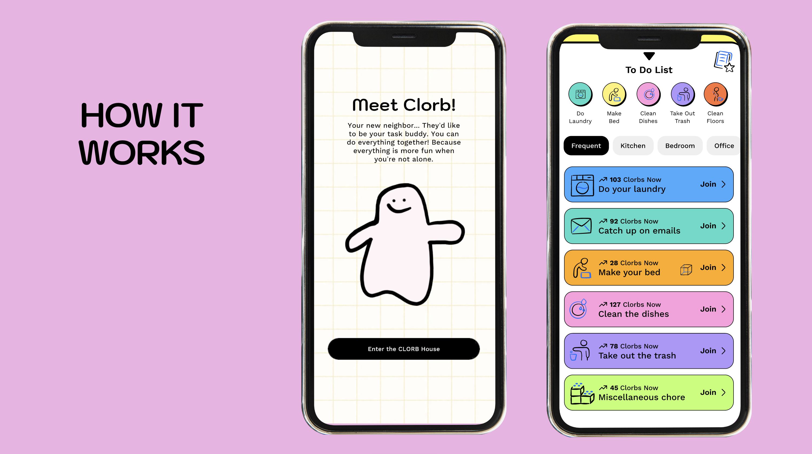
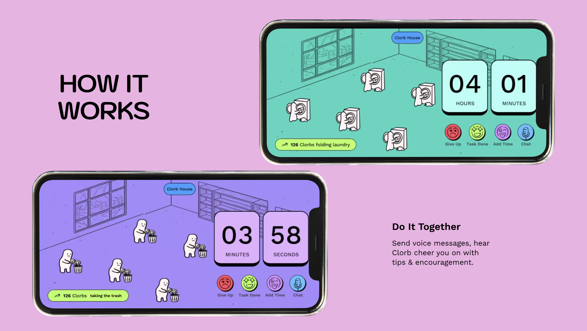
Turning Sticky Notes into User Flows
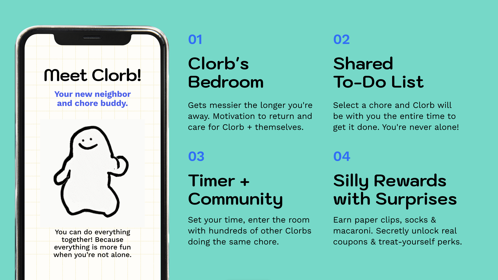
Transitioning from the whiteboard to Figma forced us to confront major user experience hurdles. Our early sketches assumed that users would want to chat while cleaning. However, when we wireframed the interface, we realized that manual typing would distract users and completely defeat the purpose of a focus tool.
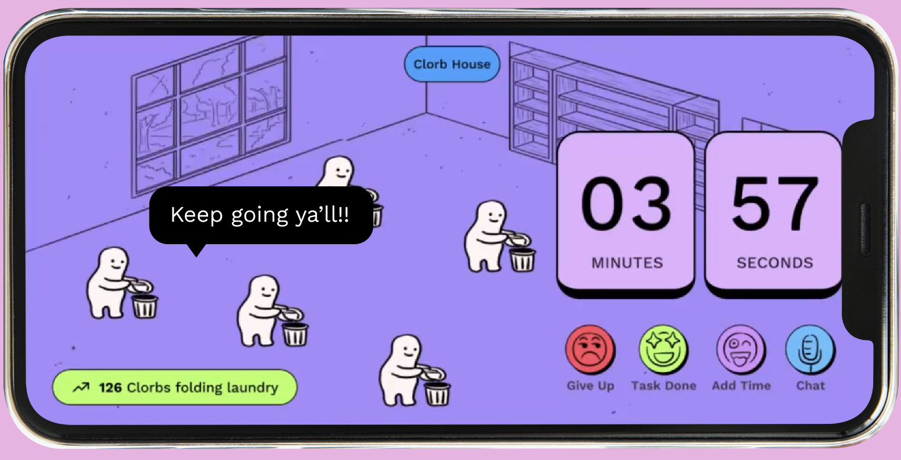
We replaced standard text inputs with a simple one-time messaging system, so users can still communicate with the Clorb community without pulling their attention away from their real-life chores.
The Evolution of the Feedback Loop
Our next challenge was creating a rewarding feedback loop that did not feel superficial. We initially sketched out typical gamification elements like experience points and progress bars. We quickly rejected this approach because tracking metrics made chores feel like data entry. To counter this, we designed a variable reward schedule rooted in absurd humor.
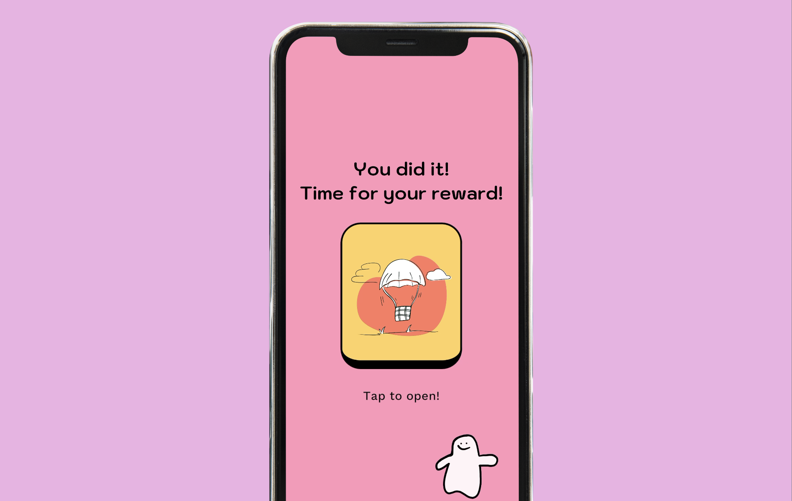
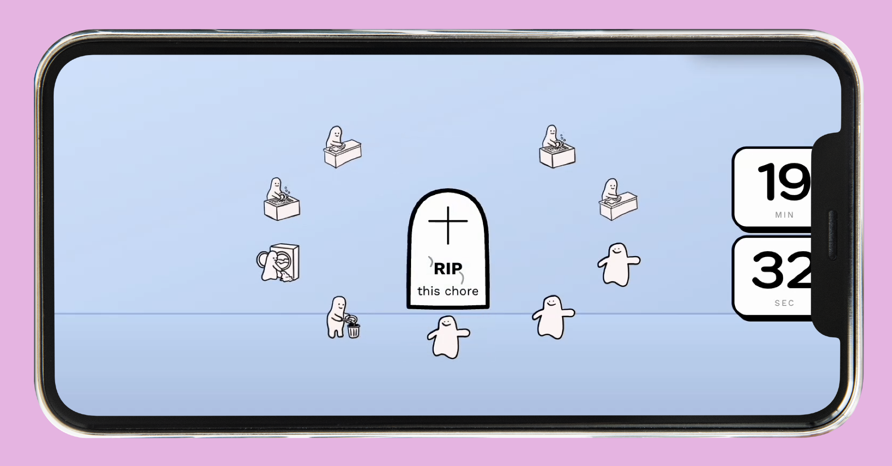
We established two distinct core mechanics to allow for whimsy:
The Gacha Box: Completing a task rewards the user with useless, low-stakes digital artifacts like a dried macaroni noodle, a single unmatched argyle sock, or a damp sponge. We learned that unpredictable, self-aware humor drives stronger intrinsic motivation than arbitrary digital gold stars.
The Candlelit Funeral: Abandoning a task mid-chore triggers an unskippable, hilariously tragic funeral ceremony held by the neighborhood Clorbs. We deliberately introduced this high-friction emotional penalty to act as a playful deterrent against quitting.
// develop
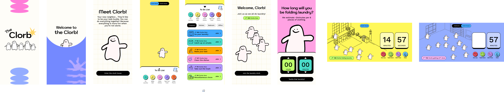
From Procreate to Code
Moving from static designs to a live application in just a day required an agile prototyping pipeline. We began by hand-drawing every asset and animation frame in Procreate to ensure the interface retained a warm, human quality. We then imported these assets directly into Figma to build a structural layout based on content architecture rather than generic minimalist aesthetics.
To accelerate our development, we used Gemini to draft a structured Product Requirements Document based directly on our whiteboard notes. This ensured the engineering team remained aligned on feature scope. From there, we established an AI-assisted development workflow, utilizing Claude and v0 to rapidly generate our React components, while integrating Unity for custom animation states.
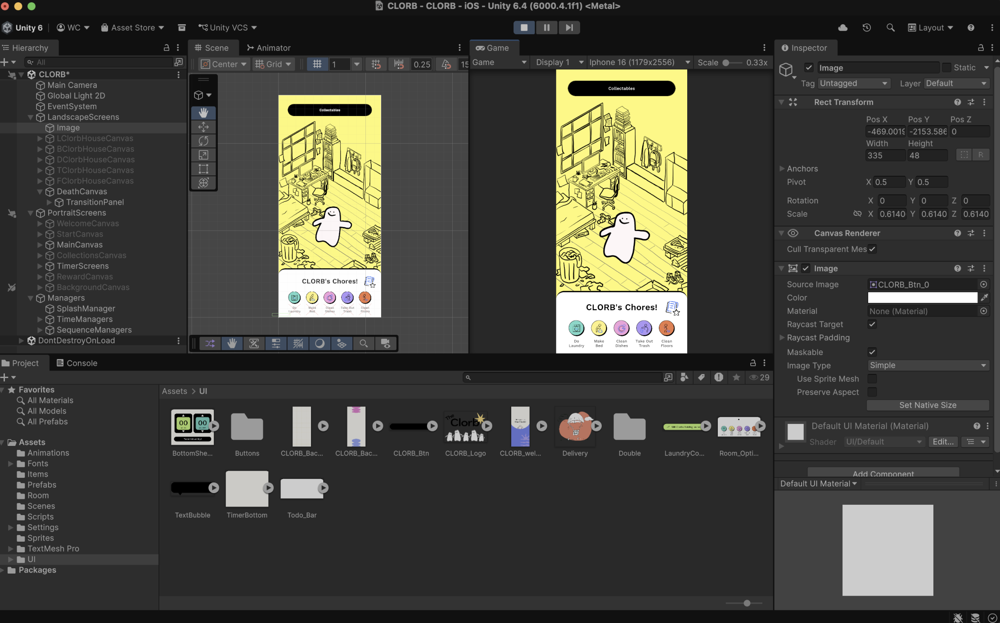
Technical Infrastructure
We chose React, TypeScript, and Tailwind CSS v4 to build a modular frontend architecture. To power the live multiplayer rooms, we integrated Supabase, which allowed us to sync real-time user counts and ambient messages instantly.
We deliberately mapped the codebase to mirror the chronological phases of our user flow:
- `Welcome.tsx` for initial onboarding and setup
- `MeetClorb.tsx` for bedroom rendering based on away-time
- `TodoList.tsx` for the community chore directory
- `TaskSelect.tsx` for chore selection with live user tallies
- `TimeSelect.tsx` for countdown duration pickers
- `ExecutionRoom.tsx` for the multiplayer arena with synced animations
- `Reward.tsx` for the gacha randomization engine
- `Funeral.tsx` for the task abandonment sequence
Our major engineering breakthrough during this phase was mapping the state of the user's digital bedroom to their real-world absence. If a user avoids the app, the room dynamically accumulates clutter, which serves as a visual, non-intrusive reminder to re-engage with their habits.
// deploy
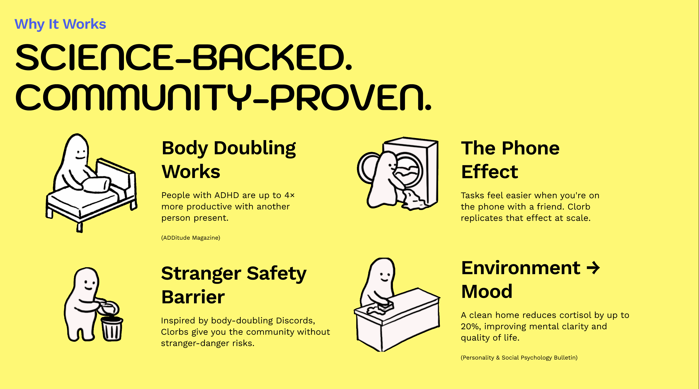
Sustainable Monetization and Future Scalability
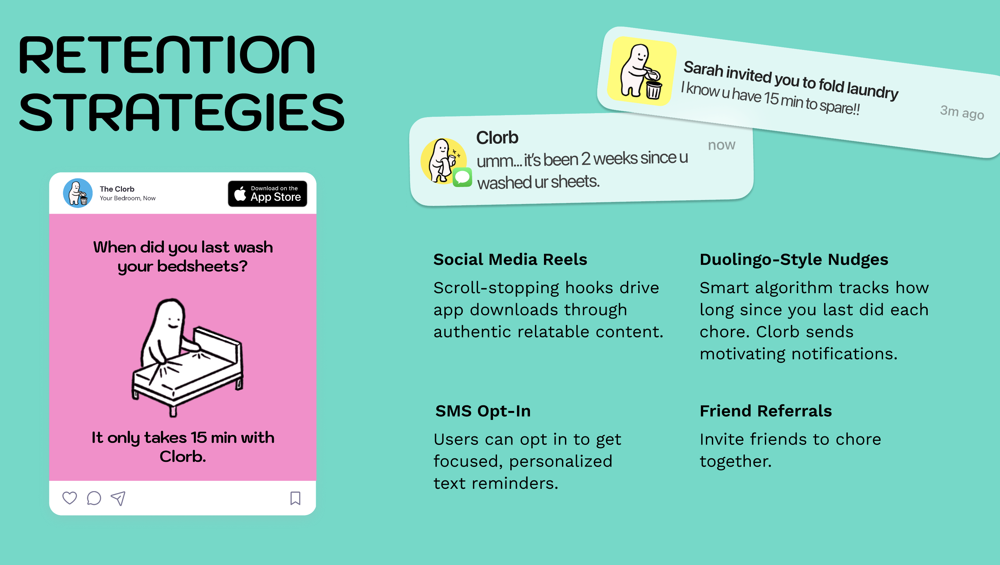
Naturally, our product must be financially viable without compromising the core user experience. We designed a monetization model that protects the user's focus during their workflows. Advertisements would run exclusively during active countdown timers when users are looking away from their phones.
We imagined partnerships with home-care brands to illustrate their products directly into the Clorb environment, turning advertising into a cohesive asset rather than a disruption.
Growth and Market Position
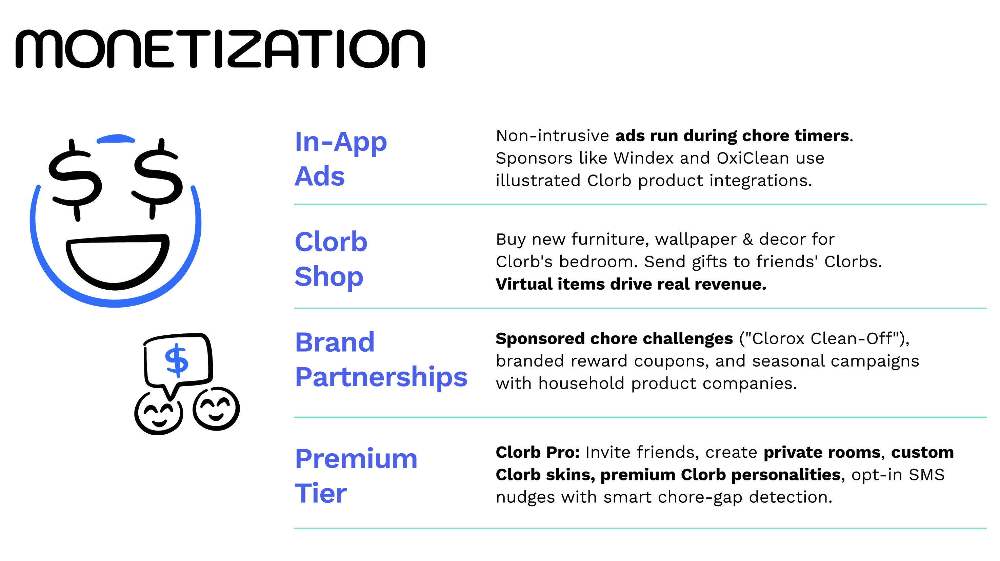
We positioned Clorb to directly serve adults who experience chronic burnout and digital isolation. Existing productivity tools are cold and transactional, while body-doubling forums can feel intimidating or unsafe for introverted users.
Clorb occupies a unique space in the market because it emphasizes accompaniment over rigid tracking. Our deployment strategy utilizes playful, relatable social media hooks and empathetic push notifications to build an organic user base, ensuring that no one has to face their daily routine alone.
What's Next
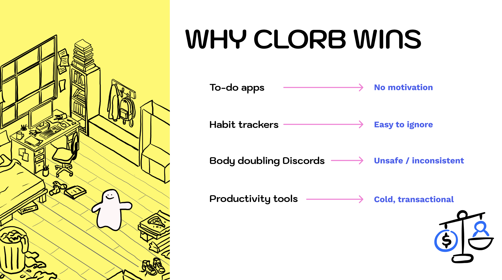
After winning the hackathon, we've been hearing from so many people to make the design into a real app! We are currently coding it by hand in Unity, and hope to launch soon!